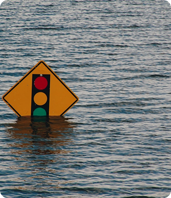
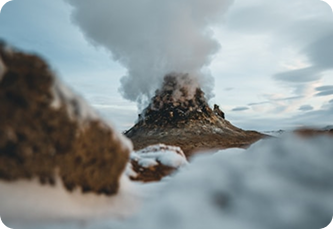
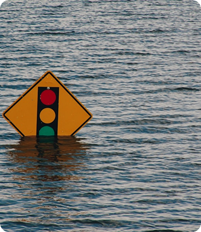
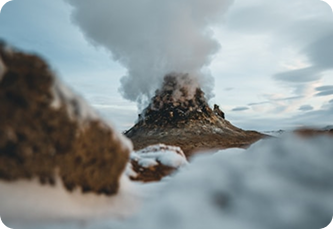

Bem-vindo ao GeoImpacto
Explore, aprenda e entenda como os desastres naturais acontecem. Nosso objetivo é informar estudantes e professores sobre fenômenos como terremotos, furacões, incêndios, inundações e outros eventos extremos que impactam o planeta. Aqui, o conhecimento se transforma em prevenção e conscientização.
 


